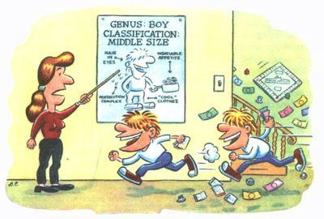

Our younger boys are now nine and 11 going on 16 and 18. Our house seems joyously overrun with "neither/nors" treading a happy path between childhood and adolescence, demanding as is convenient the rights of both, accepting graciously the responsibilities of neither. I observe that this age group, roughly nine through 12, composes a more or less specific classification of the genus Boy, and elicits a number of rather well-defined characteristics. For want of a better term, I shall call this classification Middle-Size.
Members of this group, for example, feel entitled to wear their hair down to their eyeballs, but feel no obligation to comb it. They insist on "cool" clothes, which they will fish from under the bed for the third or fourth day's wearing. Middle-Size boys operate on the basis of one inflexible rule: Get everything out, put nothing away.
Middle-Size friends call on the phone and in a determinable number of minutes (the time required to pedal from there to here) will enter the house, make their way to the small bedroom upstairs, and caucus. Then they spill over to all parts of the house in pursuit of varied activity. If they launch into a peaceful game of Monopoly, it subsequently erupts into a noisy hassle between the brothers, splitting the group into factions bent on out-insulting one another. Ultimately they will straggle to the kitchen, where they display a characteristic common to all species of this genus: insatiable appetite.
Whereas small boys can be satisfied between meals with a few cookies and a glass of milk, Middle-Sizes have appetites leaning more towards large pots of macaroni or spaghetti, one pan per boy. When they become aware that their friends are sitting around salivating, they inevitably repeat the cooking process for each friend, leaving the kitchen a wasteland of starch and strainers and gummy pots. Dare to suggest that they probably won't want much supper and you are treated to a harangue on how bad the cafeteria lunch was today. "All we had to eat was chocolate pudding!"
Bellies full, activity exhausted, they adjourn to a neighboring house, where I presume they overrun the premises in like fashion.
Middle-Size is an age of persecution; always in need of interpretation is a statement such as, "My bus driver hates me." It can mean she is a nasty and vindictive woman who is persecuting your son. (An explanation too readily accepted by parents who feel persecuted themselves.) It could mean that she had a bad day and looked at him cross-eyed. It probably means that after warning him eight days arunning, she made him sit in the front seat for sticking his arm out the window.
Love is best expressed during this period in harsh phrases like, "Boy! I can hardly stand Mary Sue Thompson!" But a boy's friend will freely give you the straight scoop while he beats them to silence and tries to conceal a smile. Having a bevy of boy's friends around always helps in cutting through the half-truths. More truth emerges around a noisy supper table where Middle Size boys are vying to top one an other's facts than are ever told in grouptherapy sessions.
Middle-Size friendships run hot and cold. This week's friend is next week's arch enemy. Middle-Size boys never have homework until 9:30 at night, and getting them to bed is like trying to settle a war in the General Assembly of the United Nations.
Middle-Size boys want you to share their prayers, but they don't want the facts known at large. They have abandoned Santa and the Easter Bunny, but are devoted to perpetuating the myths for younger children. Middle Size children scorn the responsibility of younger siblings in the presence of their parents, but boisterously assume authority when their parents are out of sight.
What boys want most at Middle-Size is spending money and minibikes. What they need most is understanding, responsibility, and plenty of attention. And you may be sure that if their needs aren't met at home, they will go to obnoxious lengths to win attention elsewhere.
Reprinted From: A Thread of Blue Denim by Patricia Penton Leimbach. Copyright © by Patricia Penton Leimbach..
|
 |
|
|